Purpose and Website Role
hsfbd.org is HSF's primary public website. It should help a visitor understand who HSF is, what it does, what evidence supports the work, and how to engage responsibly.
- To present HSF's institutional identity clearly.
- To explain current projects and verified results.
- To provide reports, policies and public accountability information.
- To support appropriate volunteering, partnership and donation actions.
- To keep demonstration or internal systems separate from the public website.
Audience Framework
It is recommended to write each page for a clear audience. A parent, patient, donor, partner, volunteer, journalist and researcher may need different information.
| Audience | Main need |
|---|---|
| Communities and families | Services, eligibility, location and contact. |
| Donors and supporters | Impact, accountability and safe ways to support. |
| Partners / CSR | Project model, evidence, governance and partnership route. |
| Volunteers | Roles, expectations and application process. |
| Media / researchers | Reliable facts, reports, approved statistics and contacts. |
Recommended Website Information Architecture
It is recommended to use a simple public structure. Change visible Programs to Projects. Existing URLs may remain until a planned redirect review is completed.
Who We Are · Mission, Vision & Values · History · Governance · Registration · How We Work
E4BL · A2PHC · Climate Action · Women Empowerment · Past / Other Initiatives
Overview · Results · Stories of Change · Where We Work
Annual Reports · Project Reports · Policies · Publications · Training Resources
Current-Site Content Priorities
The present website has strong authentic photography and useful history, but the content needs a clearer institutional structure.
- Project should be used consistently instead of program.
- To separate current project information from historical activity updates.
- To reconcile public statistics by scope and reporting period.
- Reduce repeated text on E4BL and A2PHC location sections.
- Strengthen About, Impact, Resources and accountability content.
- To review identifiable child sponsorship profiles through safeguarding and consent controls.
- To keep ShurjoPay as the primary online payment gateway and simplify the public donation experience.
- To review plugin, theme, update and security dependencies before redesign deployment.
Website Content Types
| Type | Purpose |
|---|---|
| Institutional page | To explain HSF, governance and accountability. |
| Project page | To explain need, response, reach, results and resources. |
| Impact page | To present verified results and learning. |
| Story of Change | To connect human experience with evidence. |
| News / project update | To record developments with public value. |
| Insight | To share useful issue-based knowledge. |
| Resource | To publish reports, policies, publications or training material. |
| Get Involved | Guide volunteer, partnership, CSR or support actions. |
Homepage Content Standard
The homepage should explain HSF before asking for support. It is recommended to use one strong hero, concise project cards, verified impact, a story, current resources and clear calls to action.
- Hero: Human Safety Foundation (HSF) + clear value proposition.
- Short “Who We Are” introduction.
- Four flagship project cards.
- Verified impact figures with reporting dates.
- Story of Change or field evidence.
- Where We Work.
- Latest News & Insights.
- Reports and accountability links.
- Volunteer, partner and support actions.
Project Page Standard
It is recommended to use one consistent template for every flagship project.
- To use the full project name before the acronym.
- To separate current reach from cumulative reach.
- To use approved project images and evidence.
- To keep location detail concise; use cards or a map instead of repeating the same paragraph.
- To move historical camps or events to News / Project Updates.
About, Governance and Leadership
The About section should build institutional trust without long biography-style text.
- Who We Are: 100–150 words.
- Mission: one clear statement.
- Vision: one clear statement.
- Values: 4–6 practical values.
- History: short timeline.
- Governance: approved roles and short biographies.
- Registration & Recognition: verified institutional facts only.
- Policies & Accountability: links to approved public documents.
Impact and Evidence Pages
Impact content should explain change, not only activities. Every figure needs a clear scope and reporting period.
| Field | Required |
|---|---|
| Metric | What is being measured. |
| Value | Approved public figure. |
| Scope | Project, centre, district or organization. |
| Reporting period | Date or period the value represents. |
| Type | Current or cumulative. |
| Source / owner | Internal evidence source and responsible unit. |
News & Insights Standard
Rename the public Blog area to News & Insights and use clear content categories.
Institutional developments with public value.
Real field and project developments.
Evidence-led human stories.
Useful issue-based thought leadership.
It is recommended not to publish generic articles only to increase page count or search traffic.
The public blog should function as an organized knowledge and update channel
The public blog should be presented as News & Insights or another approved public label while WordPress may continue to use the normal Posts system in the backend. HSF news, project updates, stories of change, issue-based insights and announcements should be separated by clear categories so that readers can understand what type of content they are opening.
Blog listing page
- Each article card should show a clear category, title, short excerpt, publish date and approved thumbnail.
- Language labels such as English or বাংলা should be shown when both languages are published.
- Search and category filters should be available when the article library becomes large enough to justify them.
- Generic repeated labels such as “Read More” should be replaced where practical with clearer links such as “Read article” or the article title.
- Pagination or an accessible “load more” pattern should be used instead of an endless unstructured archive.
Single article page
- The article should begin with a breadcrumb, category, descriptive H1, short summary, publish date and updated date when relevant.
- The author should be identified as an approved person or as the HSF Editorial Team rather than an unclear WordPress username.
- The featured image should include approved alt text and, when needed, a caption and credit.
- Headings, short paragraphs, lists and pull quotes should be used to keep long articles readable on mobile screens.
- Relevant project pages, evidence, reports or external sources should be linked where they support the article.
- A related-content area and one appropriate CTA should be shown at the end.
Recommended public categories
Editorial controls for public blog content
- Each post should be classified before publication so that project activity is not confused with opinion or advocacy content.
- Project claims and statistics should be supported by approved evidence and a clear reporting period.
- Headlines should remain descriptive and useful; clickbait or exaggerated claims should not be used.
- Generic AI-written articles should not be published only to increase page volume or search traffic.
- Old posts should be reviewed for factual accuracy, broken links, outdated statistics and safeguarding concerns.
- Comments should remain disabled unless a clear moderation process, response responsibility and abuse-handling process are available.
- Public contribution or guest-post invitations should be managed through an approved editorial process rather than an unmanaged personal email workflow.
Resources and Transparency
It is recommended to create one trusted library for approved public materials.
- Annual reports and audited/approved public summaries.
- Project reports and results briefs.
- Public policies: safeguarding, privacy and other approved governance documents.
- Publications and research.
- Training and knowledge resources.
Get Involved and Donation Content
It is recommended to use clear pathways for volunteers, partners, CSR teams and supporters. Donation content should build trust before asking for money.
- ShurjoPay should remain the primary online payment gateway.
- To show only management-approved organizational payment routes.
- To explain receipt, privacy, refund/cancellation and donation-support contacts.
- To avoid making a donation feel like a WooCommerce product purchase.
- To review individual “Sponsor a Child” profiles; prefer project- or scholarship-based support where possible.
Contact Page Standard
It is recommended to keep the page simple but route enquiries clearly.
- General enquiries.
- Partnership / CSR.
- Volunteer.
- Media.
- Donation support.
- Office address, map and office hours.
- Accessible contact form with a short privacy note.
Writing Style and Tone
HSF website writing should be Human · Clear · Credible · Respectful · Evidence-led · Hopeful.
| Prefer | Avoid |
|---|---|
| Short to medium sentences | Long institutional language |
| Active voice where natural | Repeated “successfully organized” wording |
| Specific facts and context | Vague claims such as “countless people” |
| Dignity-first language | Pity-driven descriptions |
| Plain English | Unexplained acronyms and jargon |
Terminology and Human Dignity
It is recommended to describe the challenge without reducing a person to the challenge.
- Project, not programme, should be used in HSF operational content.
- Human Safety Foundation (HSF) should be used on the first institutional mention; HSF should be used afterwards.
- To use “participant”, “student”, “patient” or “community member” when more precise than “beneficiary”.
- To avoid labels such as “helpless”, “poor people” or other wording that defines people only by hardship.
- To use child- and disability-related terminology respectfully and consistently.
Statistics and Public Data Standard
The website should publish only statistics that have reached an appropriate approved-public-claim level.
Evidence levels, verification and public-claim approval are governed by the Impact, MEAL & Learning Framework → Evidence Hierarchy and Public Claims. The website applies those approved claims to public pages rather than maintaining a separate evidence definition.
Stories of Change and Case Studies
The website remains the preferred public home for longer approved case studies and stories of change.
Social adaptation, Issue–Response pairing and platform-specific storytelling are governed by the Social Communication Plan. Evidence strength remains governed by the MEAL Framework.
Images, Media and Safeguarding
It is recommended to use authentic HSF photography where consent and safeguarding allow. Images should support evidence, not manufacture it.
- To record project, date, location, photographer/source, consent and public-use approval.
- To use descriptive filenames and useful alt text.
- Not to publish a child's full name, patient diagnosis, exact home address or sensitive details in filenames, alt text or captions.
- To remove unnecessary GPS metadata from sensitive field images where practical.
- Not to use stock or AI imagery as if it were evidence of HSF field activity.
Website SEO and Image SEO
SEO should help people find useful HSF information. It should not change the writing into keyword-heavy copy.
- One clear page purpose and one descriptive H1.
- Unique page title and meta description.
- Short, stable URLs and meaningful internal links.
- Descriptive image filenames and alt text.
- Canonical URLs, sitemap and structured data for the public site where appropriate.
- To monitor search visibility and unexpected indexed pages.
Accessibility and Language
Target WCAG 2.2 AA for new and redesigned public pages.
- Logical heading hierarchy and keyboard-friendly navigation.
- Visible focus states and sufficient contrast.
- Meaningful link text; avoid “click here” where possible.
- Alt text, captions or transcripts for important media.
- Not to rely on colour alone to communicate meaning.
- To use human-reviewed Bangla and English. Not to publish raw machine translation.
WordPress Content Model and Publishing
It is recommended to keep WordPress. It is recommended to make the content model more structured instead of adding more free-form pages.
| WordPress content | Recommended use |
|---|---|
| Pages | About, Impact, Get Involved, Contact and other evergreen pages. |
| Projects | E4BL, A2PHC, Climate Action, Women Empowerment. |
| Stories | Stories of Change / case studies. |
| News | Institutional and project updates. |
| Insights | Issue-based articles. |
| Resources | Reports, policies, publications and training files. |
It is recommended to use structured fields for project status, locations, current reach, reporting period, SDGs, related reports, gallery, CTA and last-reviewed date.
AI-Assisted Content
AI may support drafting, editing, translation, metadata and structure. It must not become the factual source.
- Human review is required before publication.
- To verify names, dates, statistics, quotations, medical/legal claims and partner references.
- Not to upload confidential patient, student, HR, financial or safeguarding data to an unapproved AI service.
- Not to use AI to fabricate beneficiary stories, quotations, project evidence or field photographs.
Editorial Workflow, Review and Content Lifecycle
Every page should have a lifecycle: It is recommended to create → Publish → Review → Update → Archive/Redirect.
| Content | To review approach |
|---|---|
| Evergreen pages | Scheduled review at least annually or when facts change. |
| Project pages / impact figures | To review with each approved reporting cycle. |
| Governance / contact | To update as soon as an approved change occurs. |
| Campaign / event | Close, archive or redirect when no longer active. |
Recommended Page UI Mockups
The following mockups are intended as Figma-style design concepts for the future WordPress redesign. They show page hierarchy, section order, CTA placement, visual rhythm and responsive content thinking. Stock photography is used only as a design placeholder and should be replaced with approved HSF photography during implementation.
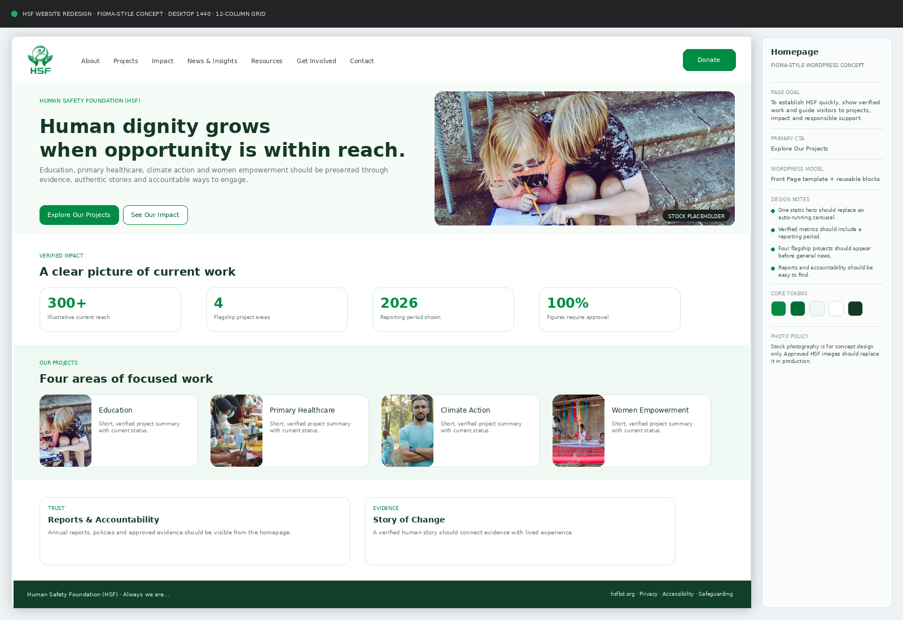
Homepage
A structured desktop design board with page purpose, content blocks, CTA hierarchy and implementation notes.
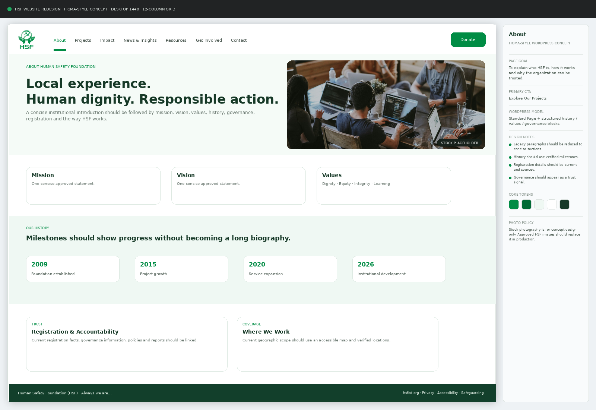
About
A structured desktop design board with page purpose, content blocks, CTA hierarchy and implementation notes.
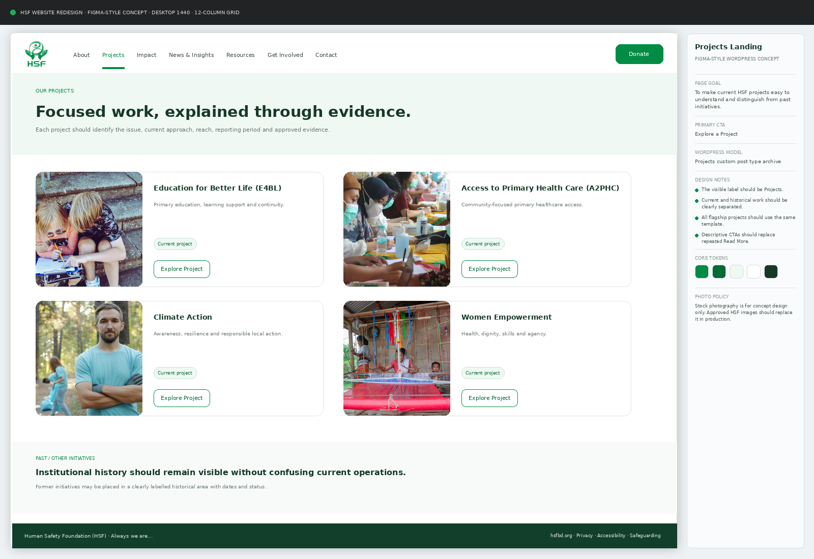
Projects Landing
A structured desktop design board with page purpose, content blocks, CTA hierarchy and implementation notes.
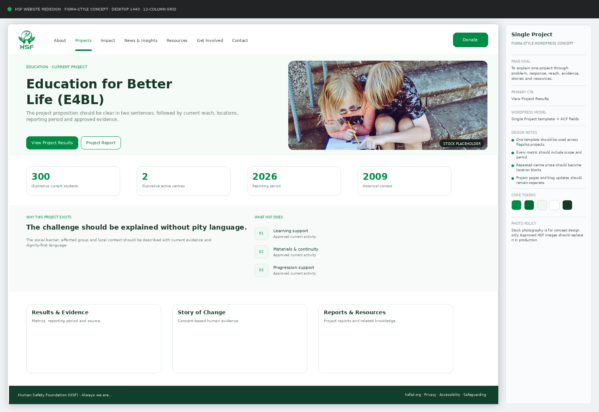
Single Project
A structured desktop design board with page purpose, content blocks, CTA hierarchy and implementation notes.
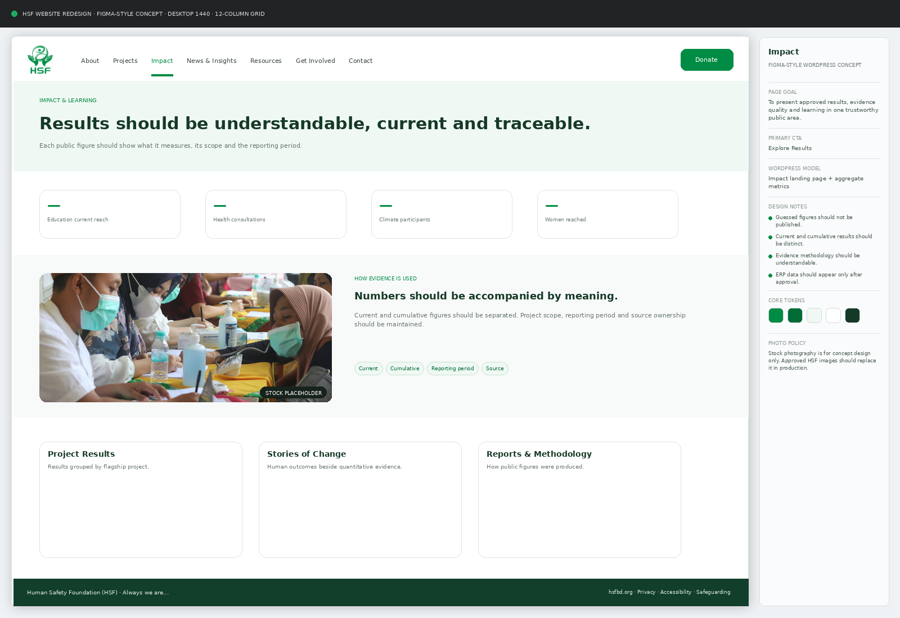
Impact
A structured desktop design board with page purpose, content blocks, CTA hierarchy and implementation notes.
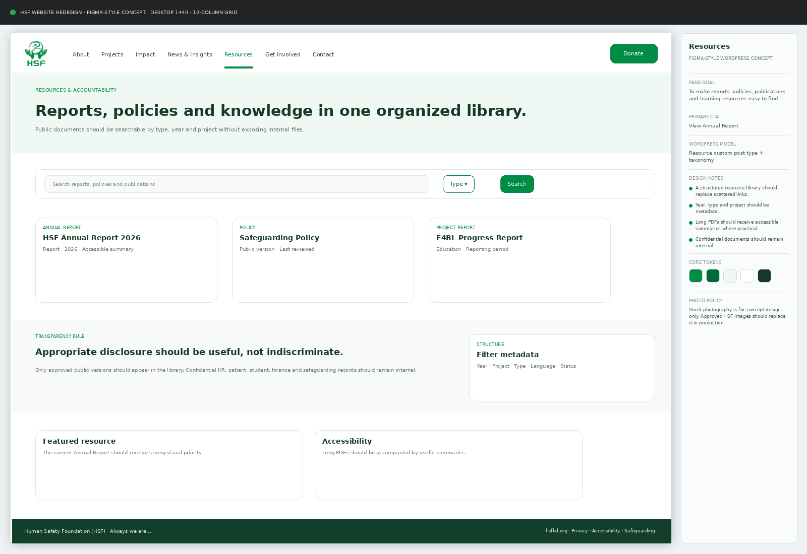
Resources
A structured desktop design board with page purpose, content blocks, CTA hierarchy and implementation notes.
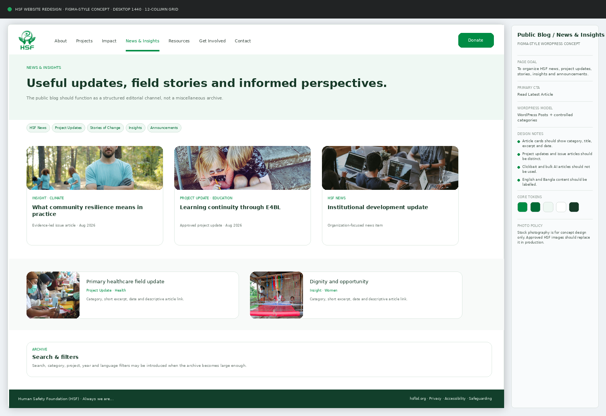
Public Blog / News & Insights
A structured desktop design board with page purpose, content blocks, CTA hierarchy and implementation notes.
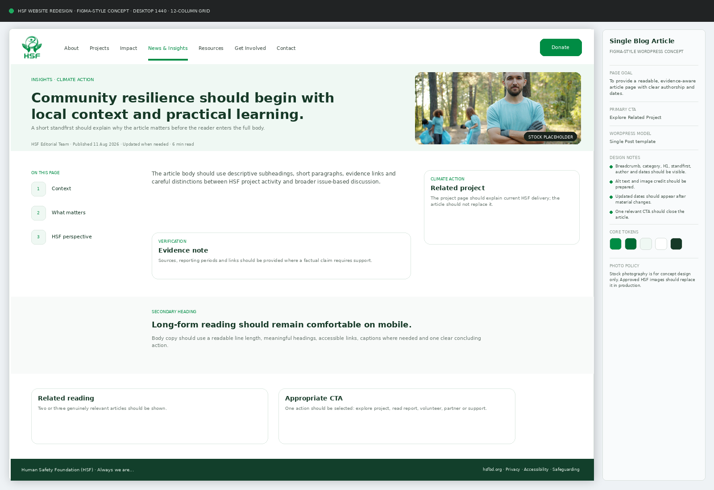
Single Blog Article
A structured desktop design board with page purpose, content blocks, CTA hierarchy and implementation notes.
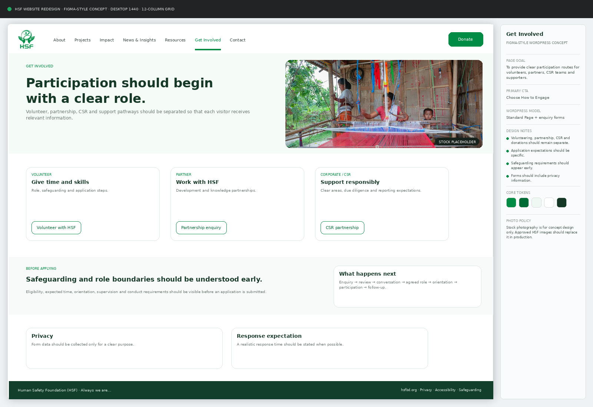
Get Involved
A structured desktop design board with page purpose, content blocks, CTA hierarchy and implementation notes.
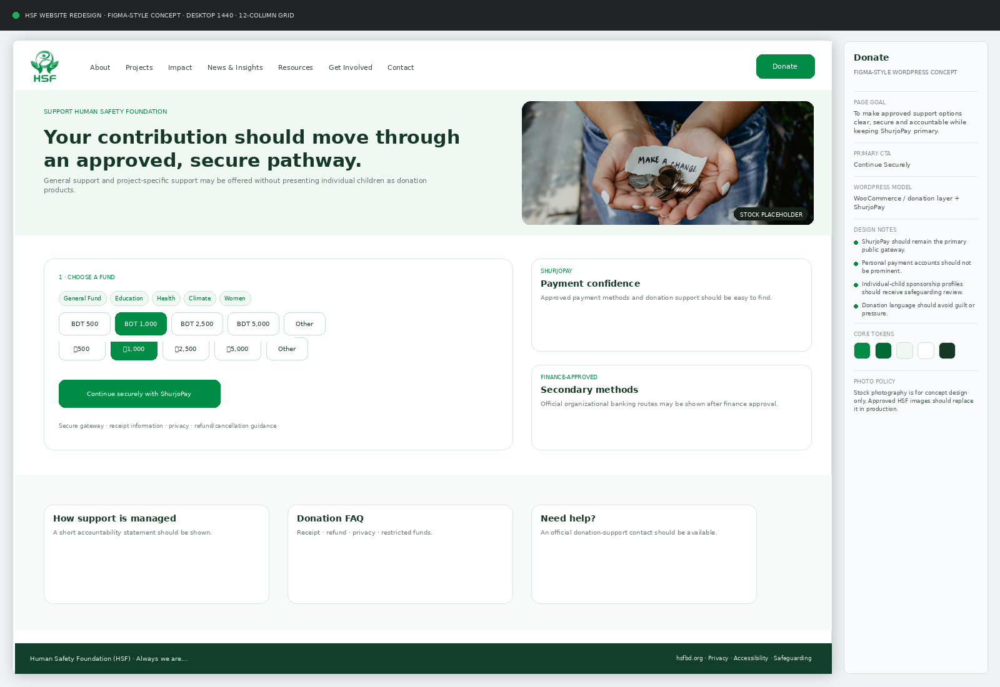
Donate
A structured desktop design board with page purpose, content blocks, CTA hierarchy and implementation notes.
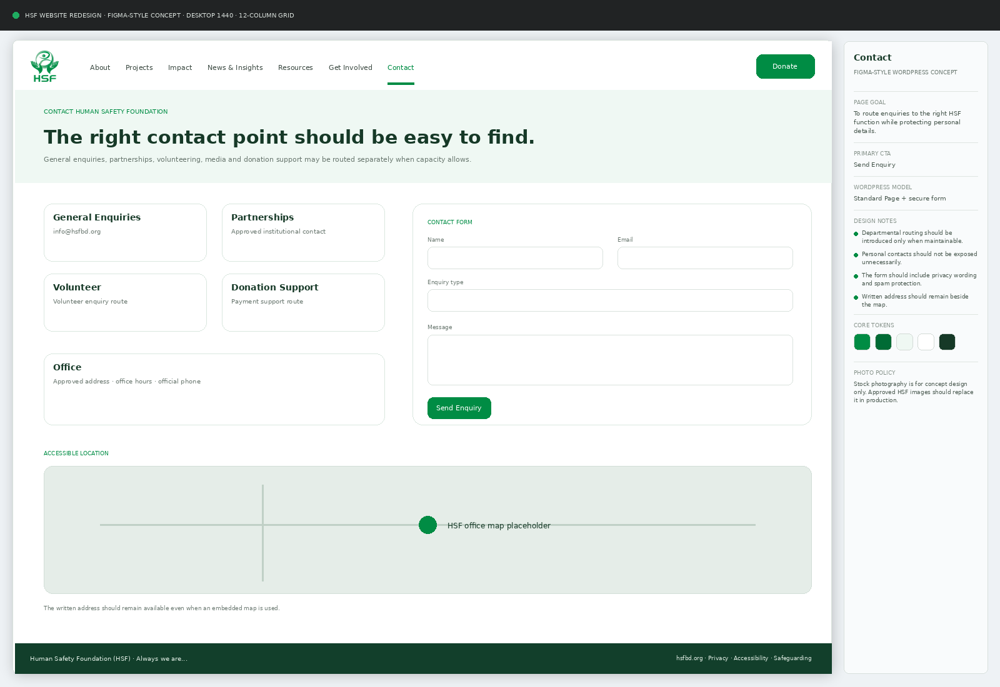
Contact
A structured desktop design board with page purpose, content blocks, CTA hierarchy and implementation notes.
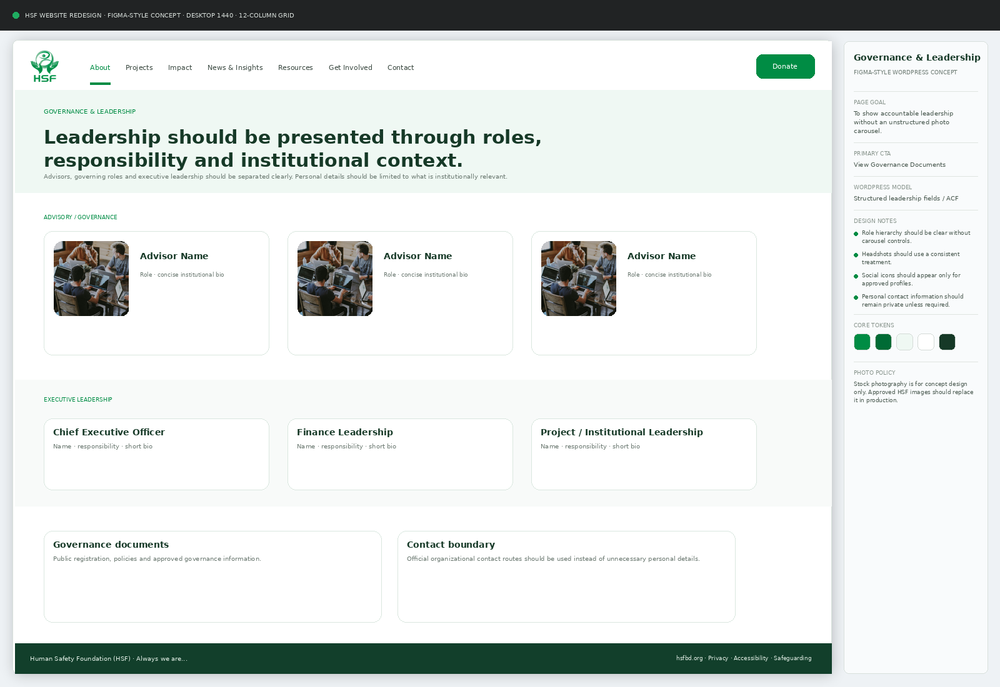
Governance & Leadership
A structured desktop design board with page purpose, content blocks, CTA hierarchy and implementation notes.
Master Publishing Checklist
Names · dates · figures · sources · quotations verified.
Clear purpose · useful H1 · plain language · no exaggerated claims.
Correct HSF and project naming · approved visual identity.
Consent · safeguarding · filename · alt text · compression.
Title · description · URL · links · index/canonical settings.
Headings · keyboard · contrast · text alternatives · mobile readability.
Required approval · publication owner · review date.
Links · forms · payment · responsive layout · metadata · analytics.